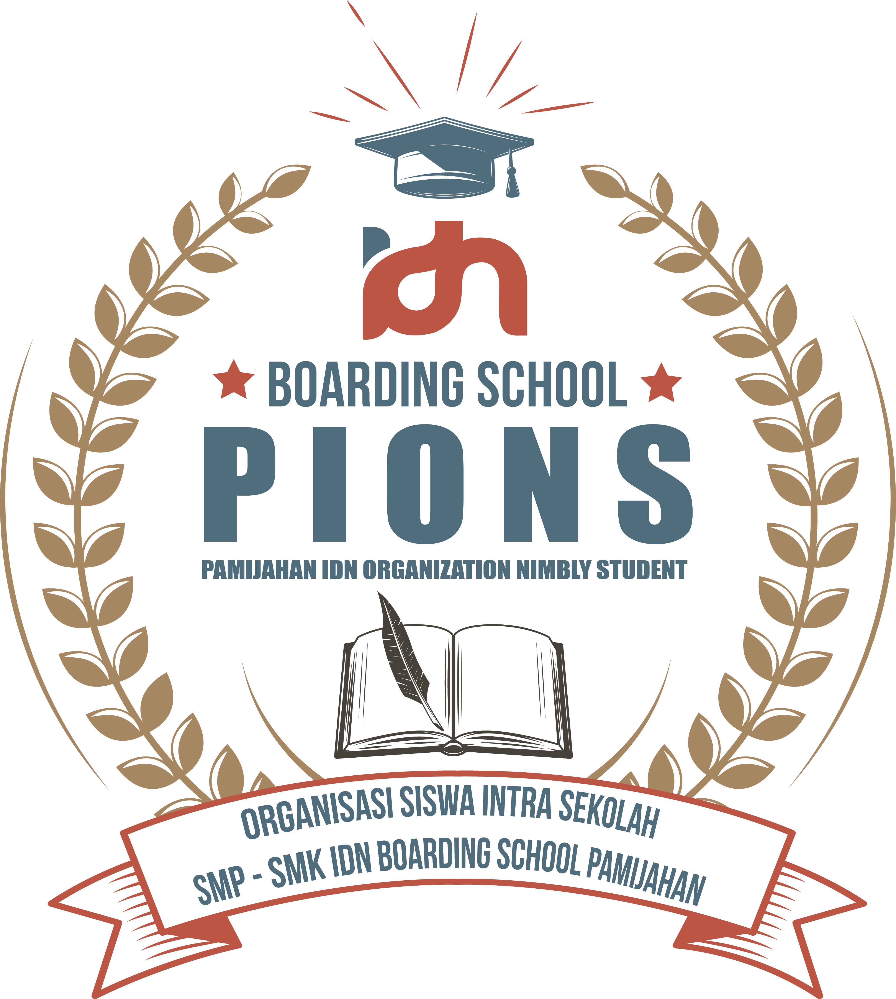

Struktur Osis IDN Pamijahan
Ketua: Rasyad Naufal Ibrahim
Wakil: Danish Aufa
Sekretaris: Ahmad Daffah
Bendahara: Nafi Ageng Diandra
Divisi Keamanan
Athallah Zaidan Ariq
Muhammad Dzikri Hidayat
Arya Kumara Shifan
Divisi Ta'lim
Nuril Nuzula Anhar
Lintang Nur Dzahir
Divisi Olahraga
Rahil Muhammad Wildan
Dzakwan Daris Rachman
Nafi Nur Malika
Divisi Pencinta Alam
Syamil Rasyidin
Muhammad Maftuh Ihsan
Muhammad Fadhlan Rabbani
Divisi Kebersihan
Noval Adi Prasetya
Salman Al Ghozy
Tubagus Valentino Dwi Amarta
Divisi Bahasa
Anas Muflih
Muhammad Al Fatih
Arjuna
Divisi Creative
Abdul Aziz
Alif Muslim Abdurrahman
Abdul Aziz Zaki Hidayat
Divisi Hubungan Masyarakat
Al Dafi Azka Mahendra
Divisi Ta'mir
Alvi Rivaldino
Kamal Hanif Mazaya
Abidal Farzan